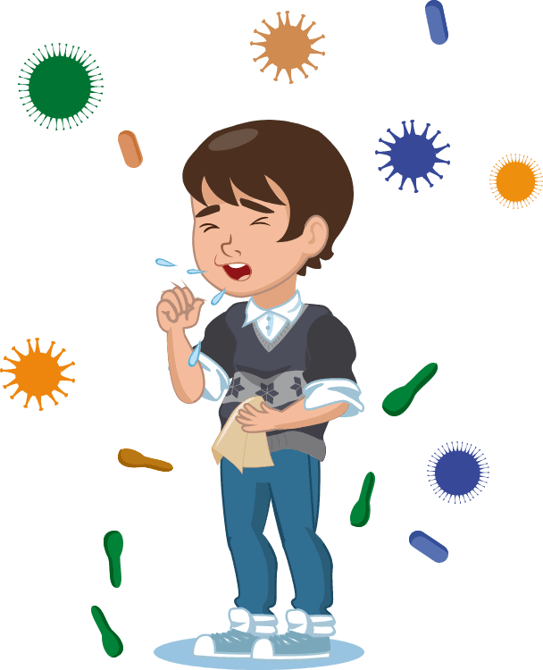
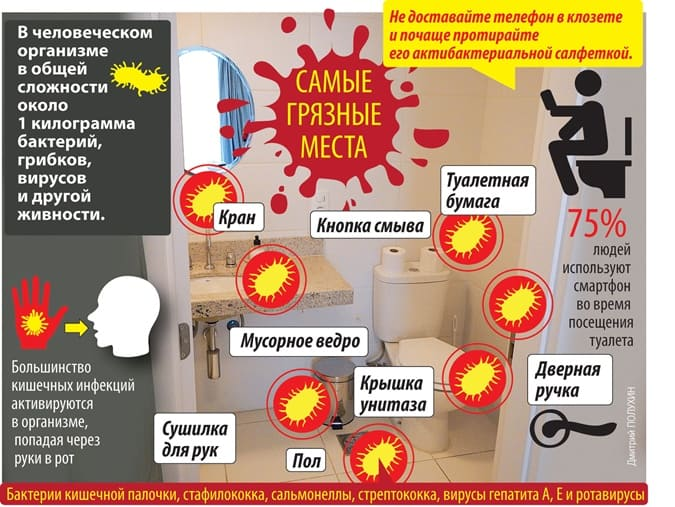
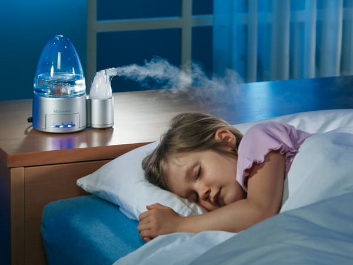

Маленькие дети, особенно посещающие детский сад, часто болеют простудными заболеваниями (ОРВИ). Одной из форм таких заболеваний является ложный круп. Ложным его зовут, чтобы подчеркнуть разницу с истинным крупом – дифтерией, страшным заболеванием с высокой вероятностью летального исхода и глубокой инвалидности, о котором мы почти забыли благодаря тотальной вакцинации детей препаратом АКДС.
Ларинготрахеит обычно вызывается вирусной инфекцией. Вирус распространяется по воздуху от больного человека во время чихания и кашля.

Ребенок также может получить вирус, если будет трогать загрязненные предметы (например, дверные ручки или поручни в автобусе), а затем (немытыми руками) свой рот, нос или глаза. Ложный круп может начинаться как обычная простуда: с насморка, кашля, боли в горле и лихорадки.

Поскольку дыхательные пути ребенка отекают, могут появиться следующие симптомы:
– лающий кашель, который нарастает ночью;
– шумное, частое или затрудненное дыхание;
– сиплый или грубый голос.
В классическом варианте приступ ложного крупа начинается в середине ночи, почти без всяких предвестников: ребенок вдруг начинает кашлять с «каркающим» звуком, с трудом втягивать в себя воздух (при этом выдох обычно не затруднен), паниковать от нехватки кислорода и метаться по кровати. Это состояние пугает родителей, особенно если они столкнулись с ним впервые.
КАК ПОМОЧЬ РЕБЕНКУ?
Прежде всего следует обеспечить ребенку покой, как физический, так и эмоциональный. Любое возбуждение, страх, физическая активность могут усугублять симптомы ложного крупа. Чтобы ребенок успокоился, сначала должны успокоиться окружающие, не забывайте об этом! Устройтесь с ребенком поудобнее, включите добрый мультфильм, поиграйте с любимой игрушкой, почитайте хорошую книжку.
Ложный круп – это инфекционное (заразное) заболевание, при котором в верхних дыхательных путях развивается отек, затрудняющий вдох. Его также называют ларинготрахеитом. Эта инфекция наиболее распространена у детей в возрасте 5 лет или младше, но может развиться в любом детском возрасте. Это состояние может случиться один раз в жизни, а может повторяться многократно.

Увлажненный воздух может облегчить дыхание ребенка. Если у ребенка появились симптомы ложного крупа, возьмите его в ванную комнату, закройте дверь, включите горячий душ и просто посидите вместе с ним, вдыхая теплый влажный воздух 15–20 минут – это должно остановить приступ одышки. Можно использовать прохладный пар из увлажнителя воздуха, направляя его на лицо вашего ребенка. Если ванная комната вам недоступна, вы можете одеть ребенка, выйти на улицу или на балкон и подышать холодным и свежим уличным воздухом. Этих простых действий может оказаться достаточно для восстановления спокойного ровного дыхания.
Когда вызывать скорую помощь при ложном крупе?
• ребенок перестает дышать или дыхание резко затруднено;
• ребенок теряет сознание;
• губы или ногти ребенка становятся синими, серыми или белыми;
• мягкие места грудной клетки западают на каждом вдохе;
• у ребенка резкая слабость или выраженная сонливость, это не похоже на его обычное состояние;
• ребенок не глотает слюну или глотает с сильными затруднениями;
• симптомы нельзя назвать тяжелыми, но они не проходят от простых домашних мер и/или ингаляции будесонида;
• вы подозреваете эпиглоттит (ребенок не вакцинирован против ХИБ-инфекции, слюна стоит во рту, есть другие подозрительные симптомы ).
Если описанных мер недостаточно (приступ продолжается после их проведения, или изначально слишком тяжелый и требует срочных мер), то может понадобиться медикаментозное лечение.
Однократной ингаляции будесонида (например Пульмикорт) через компрессионный (не ультразвуковой!) небулайзер обычно достаточно, чтобы быстро и эффективно прервать приступ крупа.
Обсудите с вашим педиатром заранее, следует ли вам иметь дома небулайзер и будесонид. Не бойтесь того, что будесонид является «гормональным» препаратом, это не опасно.
Ребенку также может понадобиться жаропонижающий препарат (не используйте аспирин для снижения лихорадки у детей до 18 лет, это может привести к синдрому Рея).
Запомните главное:
✗ ложный круп – это разновидность ОРВИ и, как любая ОРВИ, обычно проходит сам по себе;
✗ главное правило при возникновении ложного крупа – обеспечить ребенку покой, комфорт и доступ к свежему увлажненному воздуху;
✗ даже если в момент пика одышки вызов скорой помощи не потребовался, ребенка следует показать педиатру в ближайшие сутки;
✗ симптомы крупа могут сохраняться от одной ночи до одной недели, усиливаясь в ночные (особенно предутренние) часы;
✗ если дыхание ребенка затруднено и одышка нарастает, незамедлительно вызывайте скорую помощь!
(Сергей Бутрий "Здоровье ребенка: современный подход")